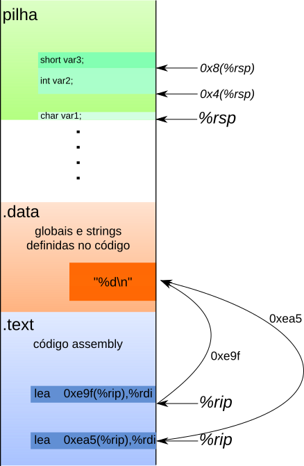

03 - Arquitetura x86-64¶
No handout passado usamos o gdb para listar variáveis globais, nomes de funções e examinar endereços de memória. Neste handout vamos começar a usar o gdb também para examinar nossos programas durante sua execução.
Parando e continuando a execução de um programa.¶
Compile funcoes.c usando as flags:
$ gcc -Og -g -Wall -std=c99 funcoes.c -o funcoes
Tip
Na compilação, -Og irá permitir otimizações de código que não interfiram no debugging. Já o parâmetro -g irá tornar disponíveis informações úteis para o debugging (como tipos de variáveis e cabeçalhos das funções)
Exercise
Abra o executável com o gdb e liste suas funções e suas variáveis globais. Não rode o programa ainda! Anote abaixo seus endereços e nomes.
Exercise
O comando disas é usado para mostrar as instruções de máquina de uma função. Use-o para ver o código de máquina da função funcao1. Liste abaixo quais registradores foram usados nesta função e qual o tamanho dos dados guardados neles.
Exercise
Com base nos tamanhos identificados, você consegue associar os registradores acima com as variáveis no código de funcao1?
Exercise
Use o comando break funcao1 para parar a execução do programa quando a função funcao1 começar a executar. Execute o programa usando run. O quê ocorre?
Após executar o run, utilize disas funcao1 e observe no código da função uma seta indicando o próximo comando a ser executado, que representa o breakpoint no início da função.
Dica
Os comandos info breakpoints, info b ou ainda i b podem ser utilizados para listar os breakpoints inseridos no código!
Exercise
Podemos usar o comando info registers edi para ver o conteúdo atual do registrador %edi. Qual é este valor? Verifique quais argumentos são passados para funcao1 no código C e, com estas informações em mãos, verifique sua resposta do Exercício 2 e escreva abaixo suas novas conclusões.
Exercise
O comando stepi executa exatamente uma instrução de máquina. Use-o uma vez e execute novamente disas funcao1. O que aconteceu? É possível saber em qual instrução o programa está parado?
Dicas:
- se a primeira instrução for
endbr64, executestepimais uma vez! - use
disasde novo - verifique novamente o conteúdo de
%edi
Exercise
Cheque novamente o valor de %edi. Este valor condiz com a instrução executada? O que ela faz, exatamente?
Exercise
Use stepi para parar logo antes do retorno da função. Verifique o conteúdo do registrador %eax e compare-o com os prints feitos pelo program. Você consegue dizer seu uso?
Exercise
Vamos agora analisar o registrador %rsi. Toda vez que um registrador aparece entre ( ) estamos fazendo um acesso a memória. Ao mostrar seu conteúdo usando info registers rsi recebemos o endereço de memória que contém o dado que queremos acessar.
Exercise
Use o comando x para mostrar, em decimal, o int que está armazenado no endereço descoberto no exercício anterior. Confira seu resultado com o código.
Tip
Execute o comando continue para continuar rodando o programa. Ele irá rodar até que o próximo breakpoint seja alcançado ou até que o programa termine.
Endereçamento relativo e variáveis globais¶
Na parte anterior analisamos o código Assembly de nossa primeira função e vimos como
- mostrar o código fonte de uma função usando
disas - mostrar o conteúdo de um registrador usando
info registers - executar exatamente uma instrução usando
stepi
Também vimos que ao colocar um registrador entre ( ) estamos fazendo um acesso a memória. Esta operação é equivalente a desreferenciar um ponteiro usando *p. Neste roteiro iremos adicionar um detalhe importante: podemos fazer contas com endereços usando esta notação. Nos exemplo abaixo nos referimos a memória como um grande vetor de bytes unsigned char M[]. Ou seja, ao acessar M[%rax], por exemplo, estamos acessando o lugar na memória cujo endereço está escrito em %rax.
10(%rax): acessa a memóriaM[%rax + 10].(%rax, %rdi, 4): acessa a memóriaM[%rax + 4 * % rdi]. Note que isto se parece com aritmética de ponteiros cujo tipo apontado seja inteiro, pois os endereços pulam de 4 em 4 bytes.
Exercise
Saia e abra o gdb novamente. Mostre o código de máquina da função funcao2 e coloque um breakpoint em sua primeira instrução.
Exercise
Execute agora o programa. A execução deve ter parado no início de funcao2. Rode disas funcao2.
Exercise
Você consegue identificar acessos a memória em funcao2? Quais são de leitura e quais são de escrita? Qual o tamanho dos dados lidos/escritos?
Exercise
Qual o significado do registrador %rip? Se não se lembrar reveja os slides.
O tipo de acesso a memória que estamos realizando se chama rip relative addressing. Este tipo de acesso é reservado para variáveis globais e dados somente leitura. Estes dados tem uma característica especial: eles são copiados para a memória seguindo o mesmo layout do arquivo executável. Ou seja, as posições relativas entre o código e os dados globais são fixas.
Exercise
Anote abaixo o endereço das funções MOV que utilizam este acesso. Baseado nos exemplos acima, descubra o endereço das variáveis acessadas.
Desenho de acesso a memória usando %rip
A figura abaixo ilustra como funciona o endereçamento usando o registrador %rip. Note que os deslocamentos são diferentes pois o endereço da instrução atual é diferente. Porém, o resultado final do endereço calculado em ambas instruções é o mesmo, indicando que ambas se referem ao mesmo local na memória.

Exercise
Confira se o valor identificado na questão anterior é o mesmo mostrado a direita das instruções MOV na saída do disas. O gdb já calcula este endereço para facilitar nossa vida, mas é interessante calcular isto manualmente uma vez para entender melhor o processo.
Exercise
Use o comando continue para continuar o programa. Você deve estar agora na segunda execução de funcao2. Use o comando x para mostrar o valor armazenado na memória calculada acima. Lendo o código do programa, você consegue dizer qual variável é armazenada neste endereço? O valor atual é o esperado para a segunda execução de funcao2?
Além de poder mostrar valores na memória podemos escrever valores também. A sintaxe usada é a seguinte:
set *( (tipo *) 0x.....) = valor
onde devemos substituir tipo por um tipo básico de C, 0x... pelo endereço desejado e valor pelo valor que queremos escrever. Note que o que estamos fazendo é um cast do endereço 0x.... para um ponteiro de tipo e depois estamos acessando o valor apontado usando *!
Exercise
Escreva o valor -10 na memória da variável global usada em funcao2. Rode o programa até o fim. O resultado foi o esperado? Escreva abaixo os comandos utilizados.
Desafio
Localize na função main as chamadas ao comando printf, analise as chamadas para responder o próximo exercício!
Exercise
Encontre os endereço das strings de formatação do printf e use o comando x para mostrá-las no gdb. Escreva os comandos usados abaixo.
Atividade para entrega!¶
Aula com atividade para entrega. Confira seu repositório de entregas do classroom!
Atenção
Faça git pull no seu repositório de entregas que irá aparecer uma nova pasta dentro de atv.
Dica
Leia o README.md disponível na pasta da atividade para descobrir como resolver e entregar.